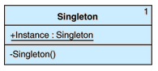

Design Patterns - Singleton Pattern (4 Examples)
Targeted Audience:
- .NET Architects
- .NET Application Designers
- .NET Application Developers
Prerequisites:
- .Net technologies.
- Basic understanding of design patterns.
- Basic understanding of OOPS.
Problem Statement:
- You are building an application in C# and you need a class that has only one instance, and you need to provide a global point of access to the instance.
- You want to be sure that your solution is efficient and that it takes advantage of the Microsoft .NET common language runtime features.
- You may also want to make sure that your solution is thread safe.
Note: The definition of singleton used here is intentionally narrower than in
Design Patterns: Elements of Reusable Object-Oriented Software [Gamma95].
Solution:
Singleton provides a global, single instance by:
- Making the class create a single instance of itself.
- Allowing other objects to access this instance through a class method that returns a reference to the instance. A class method is globally accessible.
- Declaring the class constructor as private so that no other object can create a new instance.
What is Singleton Pattern?
A design pattern that restricts the instantiation of a class to one object
Below Figure shows the static structure of this pattern. The UML class diagram is surprisingly simple because
Singleton consists of a simple class that holds a reference to a single instance of itself.

Singleton Pattern Principle:
This approach ensures that only one instance is created and only when the instance is needed.
Advantages of Singleton Pattern:
- The static initialization approach is possible because the .NET Framework explicitly defines how and when static variable initialization occurs.
- The Double-Check Locking idiom described below in "Multithreaded Singleton" is implemented correctly in the common language runtime.
Disadvantages or liabilities of Singleton Pattern:
- Unit testing far more difficult as it introduces global state into an application.
- Reduces the potential for parallelism within a program, because access to the singleton in a multi-threaded context must be serialized, e.g., by locking.
- Requires explicit initialization in multithreaded application, and we have to take precautions to avoid threading issues.
- Advocates of dependency injection would regard this as an anti-pattern, mainly due to its use of private and static methods.
- The singleton instance is obtained using the class name. At the first view this is an easy way to access it, but it is not very flexible. If we need to replace the Singleton class, all the references in the code should be changed accordingly.
- Some have suggested ways to break down the singleton pattern using methods such as reflection in languages such as C#, Java etc.
Common Uses:
- Logger Classes: The Singleton pattern is used in the design of logger classes. To provide a global logging access point in all the application components without being necessary to create an object each time a logging operations is performed.
- Configuration Classes: The Singleton pattern is used to design the classes which provides the configuration settings for an application. By implementing configuration classes as Singleton not only that we provide a global access point, but we also keep the instance we use as a cache object. When the class is instantiated (or when a value is read) the singleton will keep the values in its internal structure. If the values are read from the database or from files this avoids the reloading the values each time the configuration parameters are used.
- Accessing resources in shared mode: It can be used in the design of an application that needs to work with the serial port. Let's say that there are many classes in the application, working in a multi-threading environment, which needs to operate actions on the serial port. In this case a singleton with synchronized methods could be used to manage all the operations on the serial port.
- Factories implemented as Singletons
- Let's assume that we design an application with a factory to generate new objects (Account, Customer, Site, Address objects) with their IDs, in a multithreading environment. If the factory is instantiated twice in 2 different threads then it is possible to have 2 overlapping IDs for 2 different objects. If we implement the Factory as a singleton we avoid this problem. Combining Abstract Factory or Factory Method and Singleton design patterns is a common practice.
- The Abstract Factory, Builder, and Prototype patterns can use Singletons in their implementation.
- Facade Objects are often Singletons because only one Facade object is required.
- State objects are often Singletons.
- Singletons are often preferred to global variables because:
- They do not pollute the global name space (or, in languages with namespaces, their containing namespace) with unnecessary variables.[7]
- They permit lazy allocation and initialization, whereas global variables in many languages will always consume resources.
Additional References:
Implementation Ways:
C#
Edit|Remove
csharp
// Example 1:
class Emp
{
public int No { get; set; }
public string Name { get; set; }
public string Sal { get; set; }
// Private static object can access only inside the Emp class.
private static Emp emp;
// Private empty constructor to restrict end use to deny creating the object.
private Emp()
{
}
// A public method to access outside of the class to create an object.
public static Emp CreateObject()
{
// If the object is null for first time instantiate it once.
if (emp == null)
{
emp = new Emp();
}
// Return the emp object, when user request for create an instance.
return emp;
}
}
class Program
{
static void Main(string[] args)
{
Emp emp1 = Emp.CreateObject();
emp1.No = 10;
emp1.Name = "Sai";
emp1.Sal = "10000";
Console.WriteLine("Employee 1 Details:\n No: " + emp1.No + "\n Name: " + emp1.Name + "\n Sal: " + emp1.Sal);
Emp emp2 = Emp.CreateObject();
emp2.Name = "Sri";
Console.WriteLine("Employee 2 Details:\n No: " + emp2.No + "\n Name: " + emp2.Name + "\n Sal: " + emp2.Sal);
Emp emp3 = Emp.CreateObject();
emp1.Sal = "5000";
Console.WriteLine("Employee 2 Details:\n No: " + emp3.No + "\n Name: " + emp3.Name + "\n Sal: " + emp3.Sal);
Console.ReadLine();
}
}
// Example 2:
public class Singleton
{
// Private static object can access only inside the Emp class.
private static Singleton instance;
// Private empty constructor to restrict end use to deny creating the object.
private Singleton()
{
}
// A public property to access outside of the class to create an object.
public static Singleton Instance
{
get
{
if (instance == null)
{
instance = new Singleton();
}
return instance;
}
}
}
// Example 3:
public sealed class SealedSingleton
{
private static readonly SealedSingleton instance = new SealedSingleton();
private SealedSingleton()
{
}
public static SealedSingleton Instance
{
get
{
return instance;
}
}
}
// Example 1: class Emp { public int No { get; set; } public string Name { get; set; } public string Sal { get; set; } // Private static object can access only inside the Emp class. private static Emp emp; // Private empty constructor to restrict end use to deny creating the object. private Emp() { } // A public method to access outside of the class to create an object. public static Emp CreateObject() { // If the object is null for first time instantiate it once. if (emp == null) { emp = new Emp(); } // Return the emp object, when user request for create an instance. return emp; } } class Program { static void Main(string[] args) { Emp emp1 = Emp.CreateObject(); emp1.No = 10; emp1.Name = "Sai"; emp1.Sal = "10000"; Console.WriteLine("Employee 1 Details:\n No: " + emp1.No + "\n Name: " + emp1.Name + "\n Sal: " + emp1.Sal); Emp emp2 = Emp.CreateObject(); emp2.Name = "Sri"; Console.WriteLine("Employee 2 Details:\n No: " + emp2.No + "\n Name: " + emp2.Name + "\n Sal: " + emp2.Sal); Emp emp3 = Emp.CreateObject(); emp1.Sal = "5000"; Console.WriteLine("Employee 2 Details:\n No: " + emp3.No + "\n Name: " + emp3.Name + "\n Sal: " + emp3.Sal); Console.ReadLine(); } } // Example 2: public class Singleton { // Private static object can access only inside the Emp class. private static Singleton instance; // Private empty constructor to restrict end use to deny creating the object. private Singleton() { } // A public property to access outside of the class to create an object. public static Singleton Instance { get { if (instance == null) { instance = new Singleton(); } return instance; } } } // Example 3: public sealed class SealedSingleton { private static readonly SealedSingleton instance = new SealedSingleton(); private SealedSingleton() { } public static SealedSingleton Instance { get { return instance; } } }
// Example 4:
Thread-safe implementation for multi-threading use:
A robust singleton implementation should work in any conditions.
This is why we need to ensure it works when multiple threads uses it.
Singletons can be used specifically in multi-threaded
application to make sure the reads/writes are synchronized.
application to make sure the reads/writes are synchronized.
Lazy instantiation using double locking mechanism:
The standard implementation is a thread safe implementation, but it's not the best thread-safe implementation because
synchronization is very expensive when we are talking about the performance.
synchronization is very expensive when we are talking about the performance.
We can see that the synchronized method does not need to be checked for synchronization after the object is initialized.
If we see that the singleton object is already created we just have to return it without using any synchronized block.
This optimization consists in checking in an unsynchronized block if the object is null and if not to check again and create
it in synchronized block. This is called double locking mechanism.
it in synchronized block. This is called double locking mechanism.
- Static initialization is suitable for most situations.
- When your application must delay the instantiation, use a non-default constructor or perform other tasks before the instantiation, and work in a multithreaded environment, you need a different solution.
- Cases do exist, however, in which you cannot rely on the CLR to ensure thread safety, as in the Static Initialization example.
- In such cases, you must use specific language capabilities to ensure that only one instance of the object is created in the presence of multiple threads.
- One of the more common solutions is to use the Double-Check Locking [Lea99] idiom to keep separate threads from creating new instances of the singleton at the same time.
- Note: The CLR resolves issues related to using Double-Check Locking that are common in other environments. For more information about these issues, see "The 'Double-Checked Locking Is Broken' Declaration," on the University of Maryland, Department of Computer Science Web site, at ttp://www.cs.umd.edu/~pugh/java/memoryModel/DoubleCheckedLocking.html
- The variable is declared to be volatile to ensure that assignment to the instance variable completes before the instance variable can be accessed.
- Lastly, this approach uses a syncRoot instance to lock on, rather than locking on the type itself, to avoid deadlocks.
- This double-check locking approach solves the thread concurrency problems while avoiding an exclusive lock in every call to the Instance property method.
- It also allows you to delay instantiation until the object is first accessed.
- In practice, an application rarely requires this type of implementation. In most cases, the static initialization approach is sufficient.
The following implementation allows only a single thread to enter the critical area, which the lock block identifies, when no instance of Singleton has yet been created:
C#
Edit|Remove
csharp
public sealed class MultiThreadSingleton
{
private static volatile MultiThreadSingleton instance;
private static object syncRoot = new Object();
private MultiThreadSingleton()
{
}
public static MultiThreadSingleton Instance
{
get
{
if (instance == null)
{
lock (syncRoot)
{
if (instance == null)
{
instance = new MultiThreadSingleton();
}
}
}
return instance;
}
}
}
public sealed class MultiThreadSingleton { private static volatile MultiThreadSingleton instance; private static object syncRoot = new Object(); private MultiThreadSingleton() { } public static MultiThreadSingleton Instance { get { if (instance == null) { lock (syncRoot) { if (instance == null) { instance = new MultiThreadSingleton(); } } } return instance; } } }
Thank you for reading my article. Drop all your questions/comments in QA tab give me your feedback with
 star rating (1 Star - Very Poor, 5 Star - Very Good).
star rating (1 Star - Very Poor, 5 Star - Very Good).
Visit my all other articles here
http://code.msdn.microsoft.com/site/search?f%5B0%5D.Type=User&f%5B0%5D.Value=Srigopal%20Chitrapu